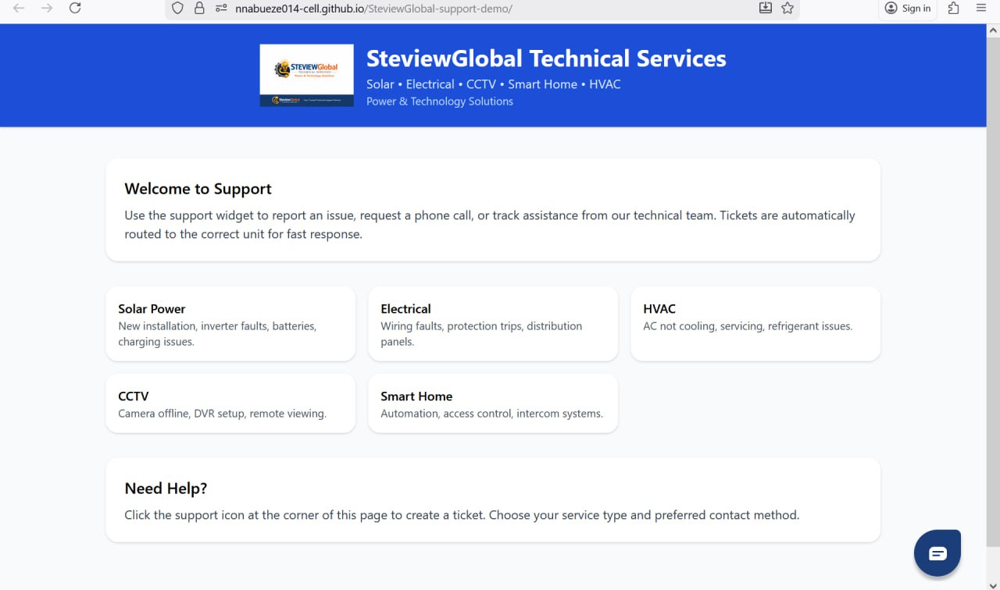
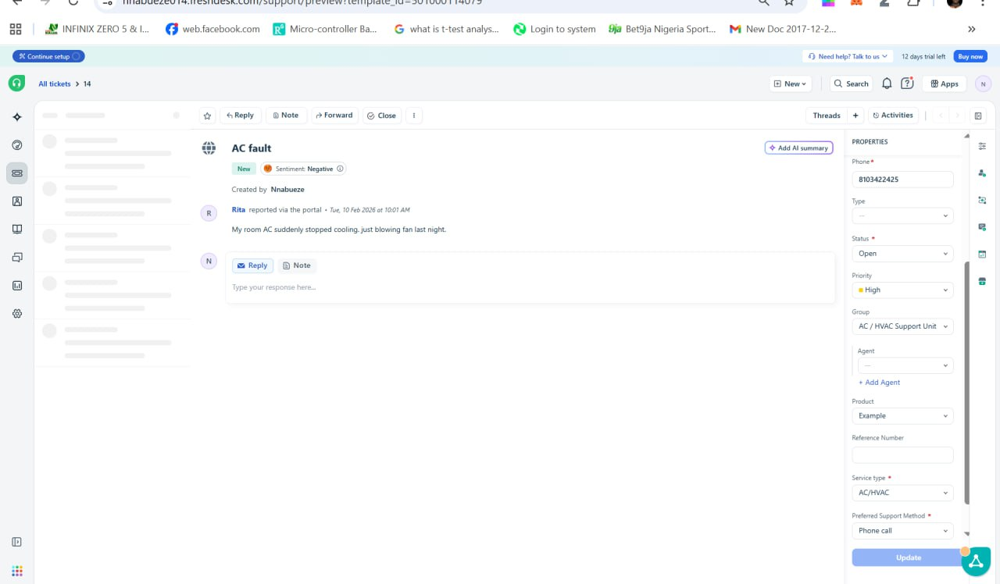
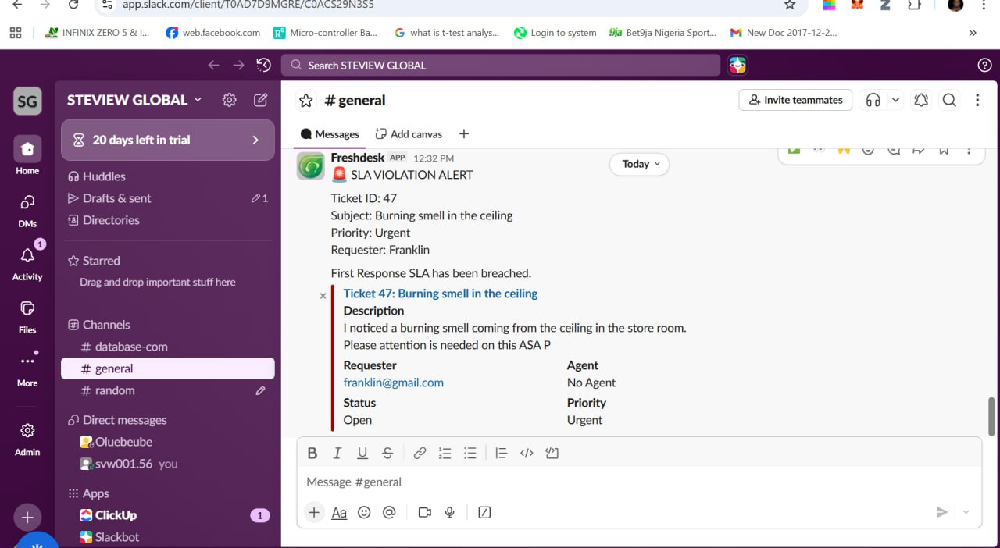
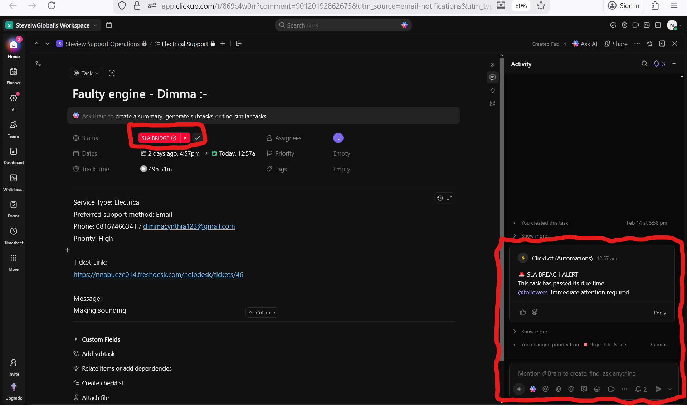

Project 2 – Support Ticket & SLA Automation
This page documents the practical implementation of an end-to-end support and operations automation system, designed to reflect real-world service desk and operations workflows. Open README to view project detail
Live Demo – Customer Support Portal
This project includes a live demo customer support portal that represents the front desk of an organization. Visitors can submit real service requests and experience how tickets flow through the system.
1. Customer Support Portal (Frontend)
A demo customer-facing support portal built with the Freshdesk widget embedded on a web page. This serves as the front desk where all customer requests originate.
2. Embedded Support Widget

The Freshdesk widget allows customers to submit service requests, select service type, preferred contact method, and priority.
3. Ticket Created in Service Desk
A support ticket automatically created in the service desk after customer submission, with categorization and SLA timers applied.
4. First Response to Customer

Automated or agent-driven first response sent to the customer, ensuring SLA compliance and acknowledgment.
5. Slack Notification – New Ticket

Real-time Slack notification sent to the support or agent channel when a new ticket is created.
6. Zapier Automation Workflow

Zapier workflow listening to Freshdesk webhook events and creating tasks based on service type, priority, and SLA rules.
7. ClickUp Task with SLA Properties

Automatically created task in ClickUp showing pipeline assignment, priority, status, watchers, and operational SLA tracking.
8. Freshdesk SLA Breach Escalation Alert
SLA breach alert pushed to a supervisor channel, ensuring visibility and accountability when response or resolution timelines are exceeded.
9. Freshdesk Automation Rules

Automation rules configured in the service desk to monitor SLA thresholds, update priority, reassign tickets, and trigger escalations.
10. Clickup SLA Breach Escalation Alert
SLA breach alert pushed to task watchers and supervisor by post comment few minutes after task due date arrived, ensuring visibility and accountability when response or resolution timelines are exceeded